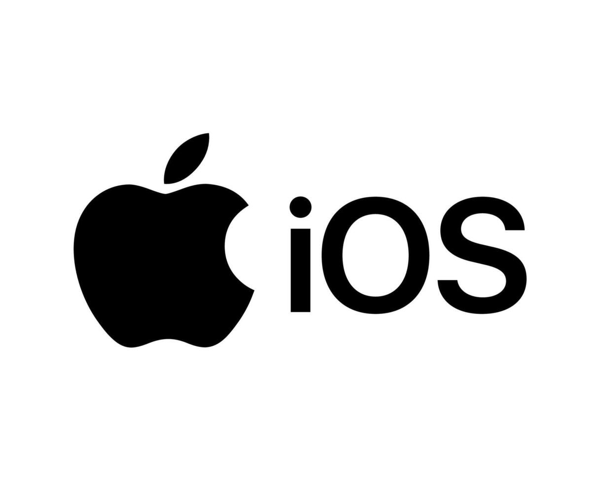
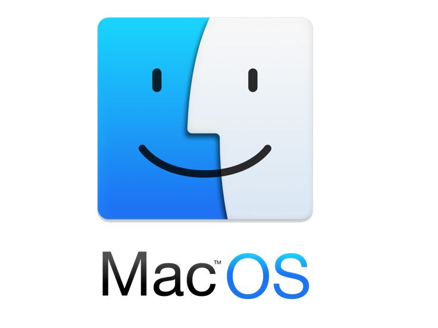
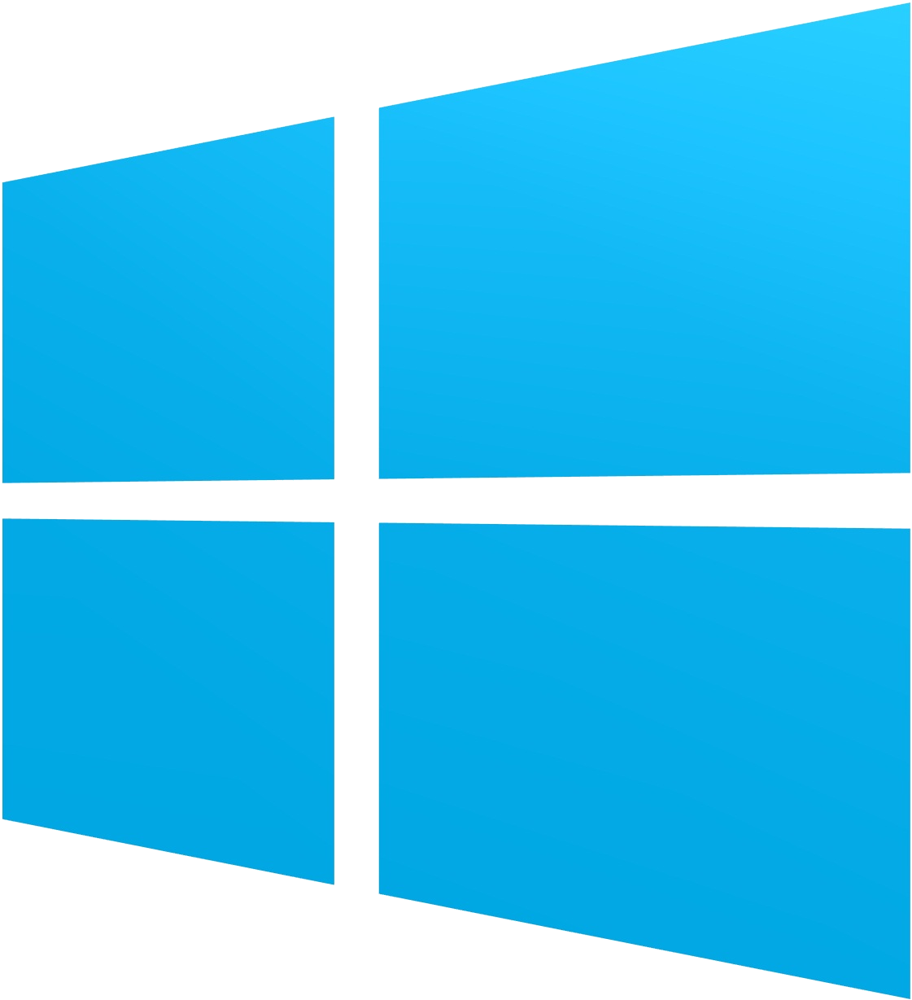

Operating System Tier List
How I am ranking: This tier list is ranking the most common operating systems out there based on how generally useful, powerful, and efficient they are (to me. This is my opinion, not fact).
| Tiers | OS 2 | OS 3 | OS 4 | OS 5 | OS 6 |
|---|---|---|---|---|---|
| S | |||||
| A |  |
||||
| B |  |
||||
| C | |||||
| D | |||||
| F |  |
Reflection
This Tier list is not really based on fact and is mostly my opinion. For things like Android and Linux since they are so vast and serve many different purposes, I put them in S just because they are so vast. While for something like windows I put at F because it has become the most entrenched, bloated, invasive, and slow OS that still is extremely popular. Red hat I haven't personally used but I have use Debian and Debian forks, along with Arch which is what i actually daily drive (I use arch btw) and have found if you're willing to tinker, especially with arch, it can give you a cleaner experience than Windows, at least for me.